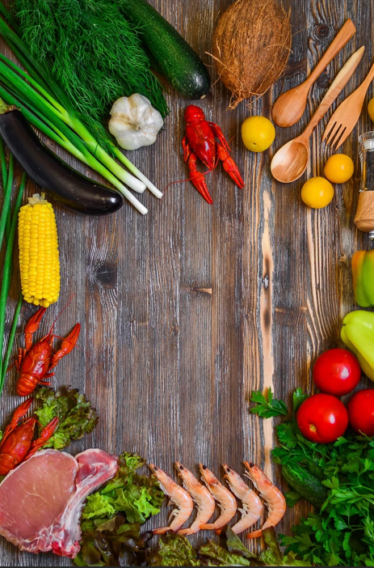

Pineapple Cake
Credit: Jason Donnelly / Food Styling: Holly Dreesman / Prop Styling: Natalie Ghazali
Description
You can't go wrong with this gorgeous pineapple upside-down cake, which comes together quickly and easily in a cast iron skillet, and will earn a permanent spot in your recipe box.
Ingredients

- 1 (20 ounce) can pineapple rings
- 1/4 cup water, or as needed
- 1/2 cup unsalted butter
- 1 (15.25 ounce) package white cake mix
- 0.5 cup vegetable oil
- 3 large egg whites
- 1.5 cups brown sugar
- 9 maraschino cherries
- 0.5 (3 inch) cinnamon stick
Steps
- Gather all ingredients. Preheat the oven to 350 degrees F (175 degrees C).
- Drain canned pineapple into a 1-cup measure. Add water if needed to measure 1 cup. Set aside juice and 9 pineapple rings for the cake. Set any remaining juice and pineapple rings aside for another use.
- Melt butter in a 12-inch cast iron skillet over medium-high heat.
- While butter is melting, combine cake mix, reserved 1 cup pineapple juice, vegetable oil, and egg whites in a mixing bowl. Beat with an electric mixer on medium speed for 2 minutes.
- Remove melted butter from the heat and sprinkle brown sugar evenly over top until all the butter is covered. Arrange 8 pineapple rings around the outer edge of the skillet and place the remaining pineapple ring in the center without overlapping. Place a maraschino cherry into the center of each pineapple ring; pour cake batter on top.
- Bake in the preheated oven until a toothpick inserted into the cake comes out clean, about 40 minutes.
- Remove from the oven and let cool in the skillet for 10 minutes; don't let the cake cool too much or it will stick to the pan.
- Run an offset spatula around the edges to gently loosen cake. Place a plate over the skillet, then flip and carefully turn the warm cake out onto a plate. Transfer any fruit or glaze that sticks in the skillet back to the cake.